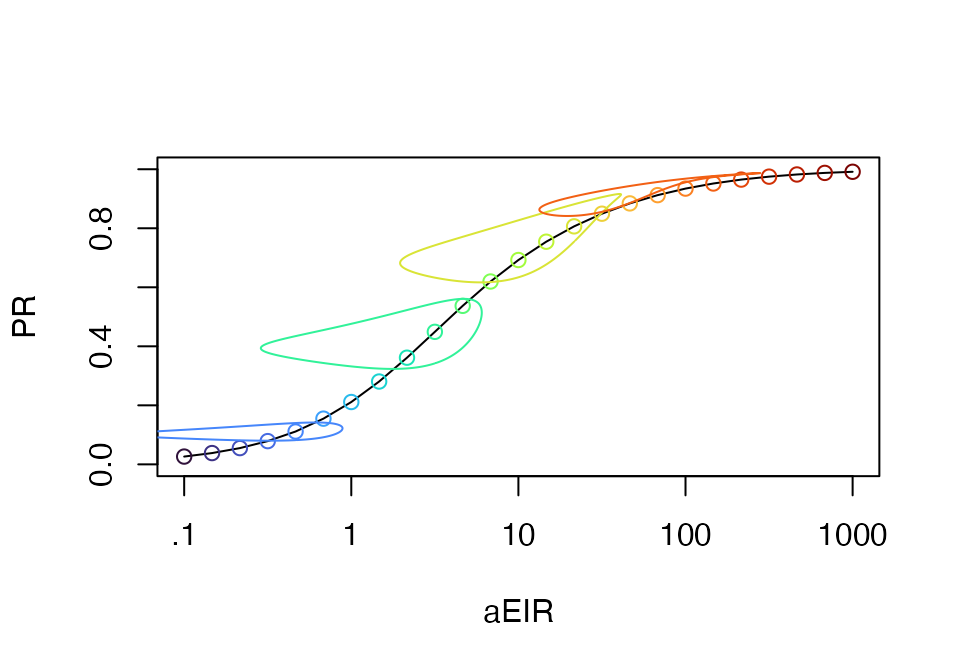
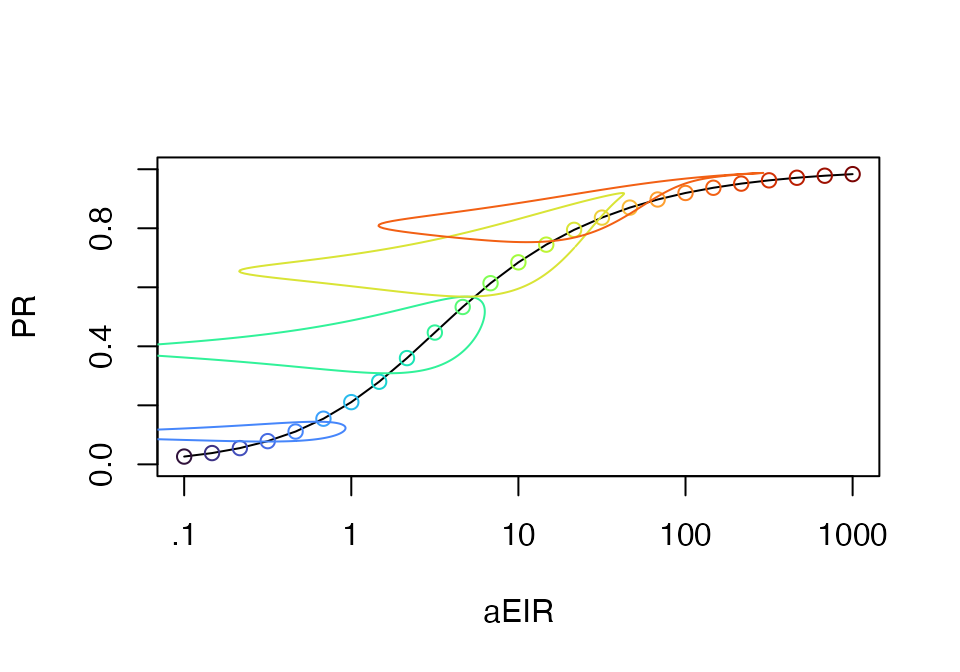

Scaling
Computing Scaling Relationships for Malaria Metrics
October 05, 2025
Scaling.RmdA core need in malaria epidemiology is to understand the relationship
between the PfPR and other metrics, including measures of
burden. To address this need, ramp.work
developed a function, called xds_scaling, that computes
scaling relationships for models of malaria epidemiology. The
functions do the following:
-
create a mesh of values for mean forcing, either
the mean annual EIR, \(\bar E\) or
aEIRorthe mean daily emergence rate for adult mosquitoes, \(\bar \Lambda\) or
Lambda
-
for each mesh value
compute stable orbits for terms, including the PfPR
compute and record the mean values of the stable orbits
For a longer discussion, see SimBA
Demo
Load the required packages:
## Loading required package: MASSWe set up a model forced by the EIR with a seasonal pattern:
model <- xds_setup_eir(eir = 1/365, season_par = makepar_F_sin(bottom = 0.2, pw=2))
model <- xds_solve(model)
show_season(model) Next, we call
Next, we call scaling and plot the PfPR as a
function of the average annual PfEIR on a semi-log plot:
xds_scaling(model) -> model
library(viridisLite)
plot_eirpr(model)
add_eirpr_seasonal_profile(c(9, 13, 17, 21), model, clrs = turbo(25))
Using xds_scaling
The function xde_scaling_eir() defines the relationship
between the EIR and the PR. It analyzes stable orbits and outputs the
average annual EIR and average annual PR for an even mesh of
log(aEIR) values running from \(10^{-1}\) up to \(10^{3}\) The code is in
mob_library/Work
To illustrate, we pick a function describing a seasonal pattern using
ramp.xds::make_F_sin
tt <- seq(0, 730, by=5)
p1 <- makepar_F_sin(bottom=0.2, pw=1.2)
Fsin <- make_function(p1)
plot(tt, Fsin(tt), type="l", xlab = "Time (Days)", ylab = "Seasonal Pattern")
Next, we set up a cohort model:
xds_setup_eir(Xname = "SIS", F_season=Fsin) -> sis
xds_solve(sis) -> sisThe function xde_scaling_eir runs the model over a mesh
of N=25 values:
xds_scaling(sis, 25) -> sisThe results are attached as sis$outputs$eirpr
plot_eirpr(sis)
plot_eirpr(sis)
add_eirpr_seasonal_profile(c(5,10,15,20), sis, clrs = turbo(25))Plotting
devtools::load_all()## ℹ Loading ramp.work
xds_solve(sis_full) -> sis_full
xds_scaling(sis_full, 30) -> sis_full
plot_eirpr(sis_full)
with(sis_full$outputs$scaling, plot(M, pr, type = "l", log = "x"))
with(sis_full$outputs$stable_orbits[[18]], lines(M, pr, type = "l"))
xde_pr2eir()
Since xde_scaling defines the relationship between the
EIR and the PR, we can now run xde_pr2eir() to get the
predicted value of the eir, for any given value of the pr. The code is
in mob_library/Work
We can run this for 50 randomly chosen values of the PfPR.
preir_i = xde_pr2eir(c(0.001, runif(25, 0, 1), 0.999), sis)The function flags any values that are outside of the acceptable range. This may not seem important for the SIS model, but the range of other models can be bounded, so we don’t want to return nonsense values.
preir_i$errors## pr1 pr2
## 0.001 0.999We can plot the others:
plot_eirpr(sis)
with(sis$outputs$scaling, points(aeir, pr, pch = 15))
with(preir_i, points(365*eir, pr, pch = 19, col = "red"))